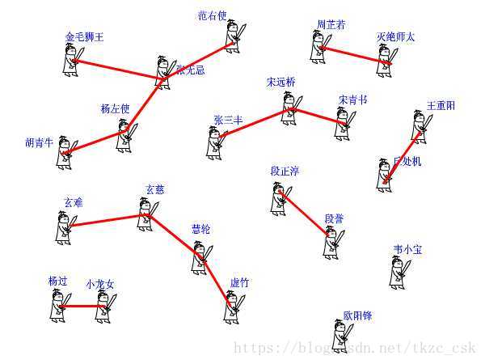
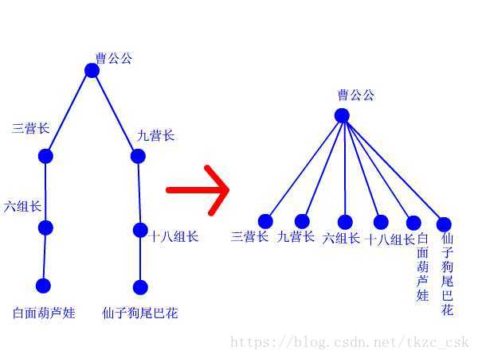

来看一个实例，杭电1232畅通工程
首先在地图上给你若干个城镇，这些城镇都可以看作点，然后告诉你哪些对城镇之间是有道路直接相连的。最后要解决的是整幅图的连通性问题。比如随意给你两个点，让你判断它们是否连通，或者问你整幅图一共有几个连通分支，也就是被分成了几个互相独立的块。像畅通工程这题，问还需要修几条路，实质就是求有几个连通分支。如果是1个连通分支，说明整幅图上的点都连起来了，不用再修路了；如果是2个连通分支，则只要再修1条路，从两个分支中各选一个点，把它们连起来，那么所有的点都是连起来的了；如果是3个连通分支，则只要再修两条路……
以下面这组数据输入数据来说明
4 2
1 3
4 3
第一行告诉你，一共有4个点，2条路。下面两行告诉你，1、3之间有条路，4、3之间有条路。那么整幅图就被分成了1-3-4和2两部分。只要再加一条路，把2和其他任意一个点连起来，畅通工程就实现了，那么这个这组数据的输出结果就是1。好了，现在编程实现这个功能吧，城镇有几百个，路有不知道多少条，而且可能有回路。 这可如何是好？
我以前也不会呀，自从用了并查集之后，嗨，效果还真好！我们全家都用它！
并查集由一个整数型的数组和两个函数构成。数组pre[]记录了每个点的前导点是什么，函数find是查找，join是合并。
1 | int pre[1000]; |
为了解释并查集的原理，我将举一个更有爱的例子。 话说江湖上散落着各式各样的大侠，有上千个之多。他们没有什么正当职业，整天背着剑在外面走来走去，碰到和自己不是一路人的，就免不了要打一架。但大侠们有一个优点就是讲义气，绝对不打自己的朋友。而且他们信奉“朋友的朋友就是我的朋友”，只要是能通过朋友关系串联起来的，不管拐了多少个弯，都认为是自己人。这样一来，江湖上就形成了一个一个的群落，通过两两之间的朋友关系串联起来。而不在同一个群落的人，无论如何都无法通过朋友关系连起来，于是就可以放心往死了打。但是两个原本互不相识的人，如何判断是否属于一个朋友圈呢？
我们可以在每个朋友圈内推举出一个比较有名望的人，作为该圈子的代表人物，这样，每个圈子就可以这样命名“齐达内朋友之队”“罗纳尔多朋友之队”……两人只要互相对一下自己的队长是不是同一个人，就可以确定敌友关系了。
但是还有问题啊，大侠们只知道自己直接的朋友是谁，很多人压根就不认识队长，要判断自己的队长是谁，只能漫无目的的通过朋友的朋友关系问下去：“你是不是队长？你是不是队长？”这样一来，队长面子上挂不住了，而且效率太低，还有可能陷入无限循环中。于是队长下令，重新组队。队内所有人实行分等级制度，形成树状结构，我队长就是根节点，下面分别是二级队员、三级队员。每个人只要记住自己的上级是谁就行了。遇到判断敌友的时候，只要一层层向上问，直到最高层，就可以在短时间内确定队长是谁了。由于我们关心的只是两个人之间是否连通，至于他们是如何连通的，以及每个圈子内部的结构是怎样的，甚至队长是谁，并不重要。所以我们可以放任队长随意重新组队，只要不搞错敌友关系就好了。于是，门派产生了。

下面我们来看并查集的实现。 int pre[1000]; 这个数组，记录了每个大侠的上级是谁。大侠们从1或者0开始编号（依据题意而定），pre[15]=3就表示15号大侠的上级是3号大侠。如果一个人的上级就是他自己，那说明他就是掌门人了，查找到此为止。也有孤家寡人自成一派的，比如欧阳锋，那么他的上级就是他自己。每个人都只认自己的上级。比如胡青牛同学只知道自己的上级是杨左使。张无忌是谁？不认识！要想知道自己的掌门是谁，只能一级级查上去。 find这个函数就是找掌门用的，意义再清楚不过了（路径压缩算法先不论，后面再说）。
1 | int find(int x) //查找我（x）的掌门 |
再来看看join函数，就是在两个点之间连一条线，这样一来，原先它们所在的两个板块的所有点就都可以互通了。这在图上很好办，画条线就行了。但我们现在是用并查集来描述武林中的状况的，一共只有一个pre[]数组，该如何实现呢？ 还是举江湖的例子，假设现在武林中的形势如图所示。虚竹小和尚与周芷若MM是我非常喜欢的两个人物，他们的终极boss分别是玄慈方丈和灭绝师太，那明显就是两个阵营了。我不希望他们互相打架，就对他俩说：“你们两位拉拉勾，做好朋友吧。”他们看在我的面子上，同意了。这一同意可非同小可，整个少林和峨眉派的人就不能打架了。这么重大的变化，可如何实现呀，要改动多少地方？其实非常简单，我对玄慈方丈说：“大师，麻烦你把你的上级改为灭绝师太吧。这样一来，两派原先的所有人员的终极boss都是师太，那还打个球啊！反正我们关心的只是连通性，门派内部的结构不要紧的。”玄慈一听肯定火大了：“我靠，凭什么是我变成她手下呀，怎么不反过来？我抗议！”抗议无效，上天安排的，最大。反正谁加入谁效果是一样的，我就随手指定了一个。这段函数的意思很明白了吧？
1 | void join(int x,int y) //我想让虚竹和周芷若做朋友 |
再来看看路径压缩算法。建立门派的过程是用join函数两个人两个人地连接起来的，谁当谁的手下完全随机。最后的树状结构会变成什么胎唇样，我也完全无法预计，一字长蛇阵也有可能。这样查找的效率就会比较低下。最理想的情况就是所有人的直接上级都是掌门，一共就两级结构，只要找一次就找到掌门了。哪怕不能完全做到，也最好尽量接近。这样就产生了路径压缩算法。 设想这样一个场景：两个互不相识的大侠碰面了，想知道能不能揍。 于是赶紧打电话问自己的上级：“你是不是掌门？” 上级说：“我不是呀，我的上级是谁谁谁，你问问他看看。” 一路问下去，原来两人的最终boss都是东厂曹公公。 “哎呀呀，原来是记己人，西礼西礼，在下三营六组白面葫芦娃!” “幸会幸会，在下九营十八组仙子狗尾巴花！” 两人高高兴兴地手拉手喝酒去了。 “等等等等，两位同学请留步，还有事情没完成呢！”我叫住他俩。 “哦，对了，还要做路径压缩。”两人醒悟。 白面葫芦娃打电话给他的上级六组长：“组长啊，我查过了，其习偶们的掌门是曹公公。不如偶们一起及接拜在曹公公手下吧，省得级别太低，以后查找掌门麻环。” “唔，有道理。” 白面葫芦娃接着打电话给刚才拜访过的三营长……仙子狗尾巴花也做了同样的事情。 这样，查询中所有涉及到的人物都聚集在曹公公的直接领导下。每次查询都做了优化处理，所以整个门派树的层数都会维持在比较低的水平上。路径压缩的代码，看得懂很好，看不懂也没关系，直接抄上用就行了。总之它所实现的功能就是这么个意思。
